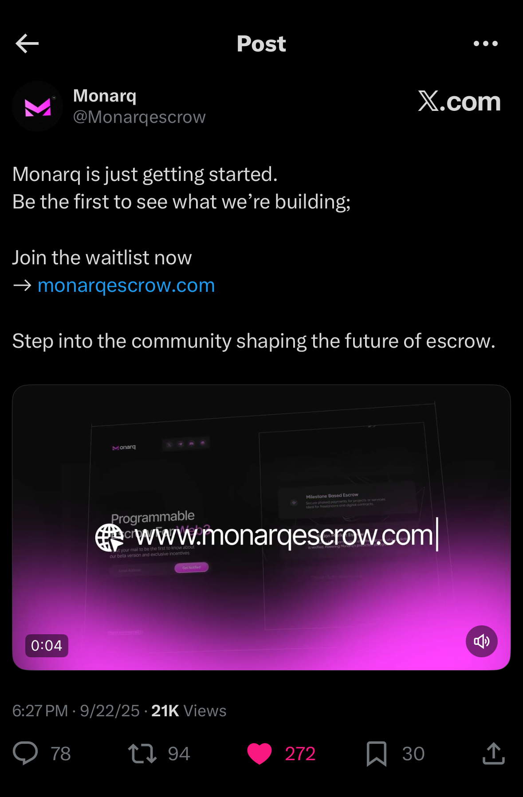
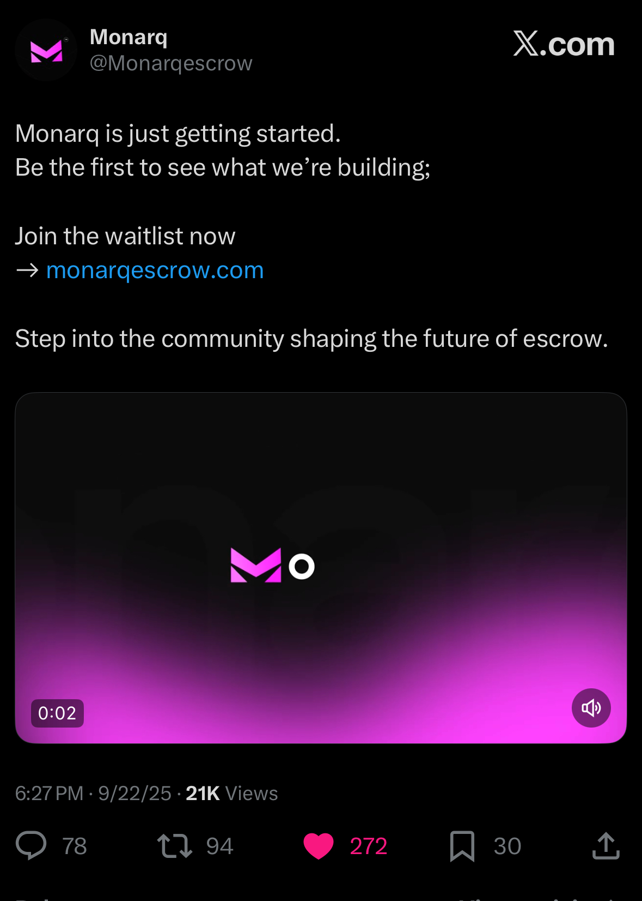

Monarq
Role: Head of Social Strategy
Platform: X (Twitter)
Led Monarq’s social and brand strategy from pre-launch through growth,
owning positioning, messaging, and content execution.
Responsibilities
- Led end-to-end marketing and social strategy
- Owned brand positioning and voice
- Built and managed Monarq’s social presence
- Defined launch-phase content strategy
- Worked closely with founders and core team

